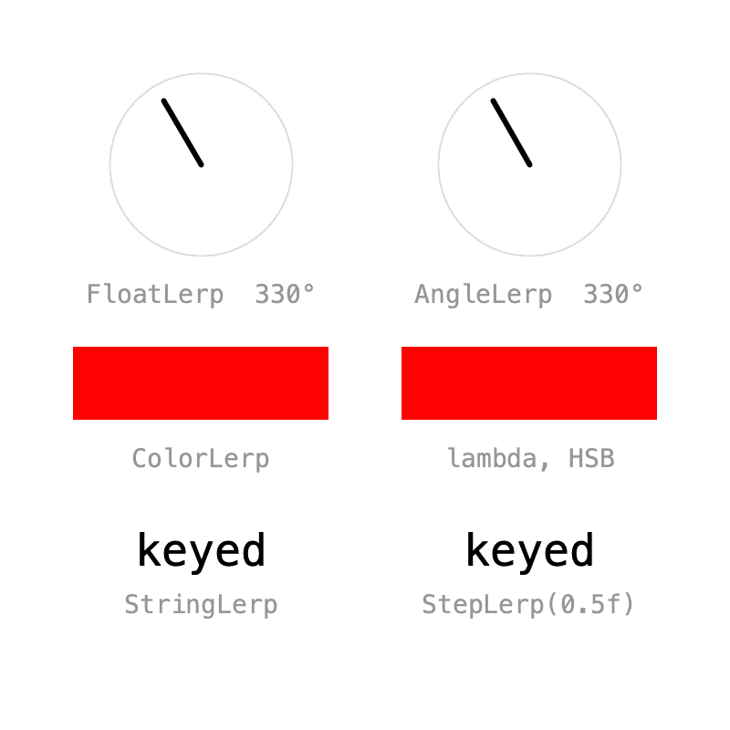
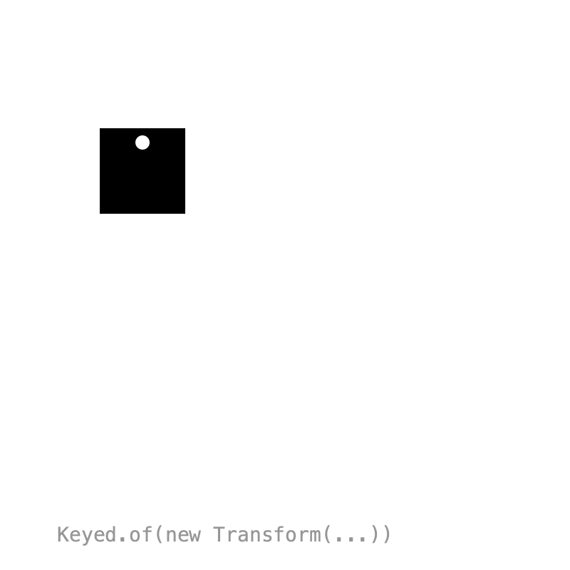
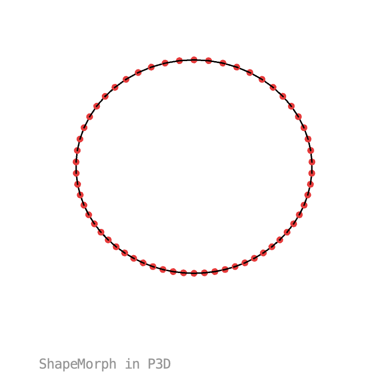
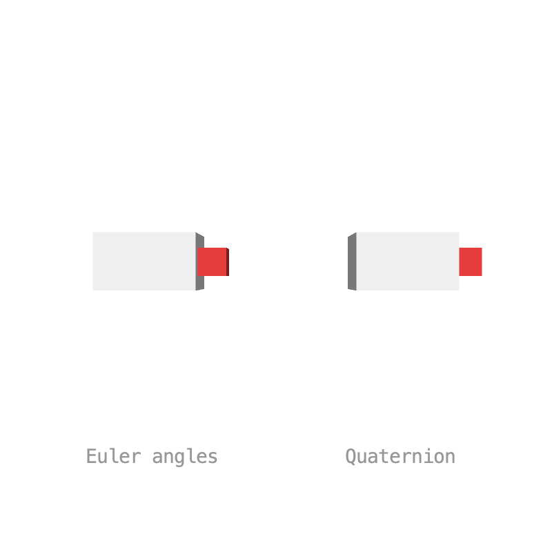

8. Types¶
How two values blend is decided by a Lerp. Keyed.ofFloat(), ofColor() and the other factories pick one for you, but you can choose your own, write one as a lambda, or teach your own classes to blend themselves. Keyed also comes with two types for shapes and 3D rotations.
Lerps¶

Pass a Lerp and a default value to the constructor to choose how values blend:
shortWay = new Keyed<>(new AngleLerp(), 0f)
.key(Key.at(0).setEasing(1 / 3f), radians(330))
.key(Key.at(2).setEasing(1 / 3f), radians(30))
.key(Key.at(4).setEasing(1 / 3f), radians(330));
The built-in lerps are in ch.domizai.keyed.lerps:
| Lerp | Blends |
|---|---|
FloatLerp, IntLerp, PVectorLerp |
numbers and vectors |
ColorLerp |
colors in RGB |
AngleLerp |
angles the short way round: from 330° to 30° it turns 60° forward, where FloatLerp turns 300° back |
StringLerp |
text, one character edit at a time |
BooleanLerp |
switches when the next key is reached |
StepLerp(threshold) |
any type; switches once the blend passes the threshold |
Lerp is a functional interface, so a lambda works too. This one blends colors in HSB, passing through the hues instead of gray:
Lerp<Integer> hsbLerp = (a, b, d) -> lerpColor(a, b, d, HSB);
hsb = new Keyed<>(hsbLerp, 0)
.key(0, color(255, 0, 0))
.key(2, color(0, 255, 255))
.key(4, color(255, 0, 0));
Full sketch: Lerps
import ch.domizai.keyed.*;
import ch.domizai.keyed.lerps.*;
Keyed<Float> longWay, shortWay;
Keyed<Integer> rgb, hsb;
Keyed<String> morph, step;
void settings() {
size(400, 400);
}
void setup() {
Keyed.init(this).setDuration(4);
textFont(createFont("Courier", 24));
textSize(14);
textAlign(CENTER, CENTER);
// A Lerp decides how two values blend. Keyed.ofFloat() and friends pick one,
// new Keyed<>(lerp, default) lets you choose.
// Keyed.ofFloat() uses FloatLerp, which blends the numbers:
// from 330° to 30° it turns back 300°.
longWay = Keyed.ofFloat()
.key(Key.at(0).setEasing(1 / 3f), radians(330))
.key(Key.at(2).setEasing(1 / 3f), radians(30))
.key(Key.at(4).setEasing(1 / 3f), radians(330));
// AngleLerp takes the short way round: 60° forward, across 0°.
shortWay = new Keyed<>(new AngleLerp(), 0f)
.key(Key.at(0).setEasing(1 / 3f), radians(330))
.key(Key.at(2).setEasing(1 / 3f), radians(30))
.key(Key.at(4).setEasing(1 / 3f), radians(330));
// Keyed.ofColor() uses ColorLerp, which blends red, green and blue:
// red to cyan passes through gray.
rgb = Keyed.ofColor()
.key(0, color(255, 0, 0))
.key(2, color(0, 255, 255))
.key(4, color(255, 0, 0));
// Lerp is a functional interface, so a lambda works too.
// This one blends in HSB, passing through the hues instead.
Lerp<Integer> hsbLerp = (a, b, d) -> lerpColor(a, b, d, HSB);
hsb = new Keyed<>(hsbLerp, 0)
.key(0, color(255, 0, 0))
.key(2, color(0, 255, 255))
.key(4, color(255, 0, 0));
// Keyed.ofString() uses StringLerp, which morphs one character at a time.
morph = Keyed.ofString()
.key(0, "keyed")
.key(2, "lerps")
.key(4, "keyed");
// StepLerp doesn't blend: it switches once the blend passes a threshold,
// here halfway between keys. It works for any type.
step = new Keyed<>(new StepLerp<String>(0.5f), "")
.key(0, "keyed")
.key(2, "lerps")
.key(4, "keyed");
}
void draw() {
background(255);
dial("FloatLerp", 110, 90, longWay.value());
dial("AngleLerp", 290, 90, shortWay.value());
noStroke();
fill(rgb.value());
rect(40, 190, 140, 40);
fill(hsb.value());
rect(220, 190, 140, 40);
fill(150);
text("ColorLerp", 110, 250);
text("lambda, HSB", 290, 250);
fill(0);
textSize(24);
text(morph.value(), 110, 300);
text(step.value(), 290, 300);
fill(150);
textSize(14);
text("StringLerp", 110, 330);
text("StepLerp(0.5f)", 290, 330);
}
void dial(String label, float x, float y, float angle) {
noFill();
stroke(220);
circle(x, y, 100);
// 0° points up.
stroke(0);
strokeWeight(3);
line(x, y, x + sin(angle) * 40, y - cos(angle) * 40);
strokeWeight(1);
noStroke();
fill(150);
float deg = (degrees(angle) % 360 + 360) % 360;
text(label + " " + round(deg) + "°", x, y + 70);
}
Your own types¶

A class that implements Lerpable knows how to blend itself, so Keyed.of() needs no Lerp. This Transform animates position, rotation and scale together, in one value:
import ch.domizai.keyed.types.Lerpable;
public class Transform implements Lerpable<Transform> {
public final float x, y, rotation, scale;
...
@Override
public Transform lerp(Transform b, float d) {
float turn = ((b.rotation - rotation) % TWO_PI + TWO_PI + PI) % TWO_PI - PI;
return new Transform(
PApplet.lerp(x, b.x, d),
PApplet.lerp(y, b.y, d),
rotation + turn * d,
PApplet.lerp(scale, b.scale, d));
}
}
transform = Keyed.of(new Transform(200, 200))
.key(Key.at(0).setEasing(1 / 3f), new Transform(100, 120, 0, 1))
.key(Key.at(1.3f).setEasing(1 / 3f), new Transform(300, 120, radians(120), 1.6f))
...
Tip
Make your type immutable, like Transform with its final fields. Then lerp() can safely return shared instances.
Full sketch: CustomType
import ch.domizai.keyed.*;
Keyed<Transform> transform;
void settings() {
size(400, 400);
}
void setup() {
Keyed.init(this).setDuration(4);
textFont(createFont("Courier", 14));
rectMode(CENTER);
// Transform (see its tab) implements Lerpable: it knows how to blend
// itself, so Keyed.of() needs no Lerp. Any class can do this.
// Position, rotation and scale are animated together, in one value.
transform = Keyed.of(new Transform(200, 200))
.key(Key.at(0).setEasing(1 / 3f), new Transform(100, 120, 0, 1))
.key(Key.at(1.3f).setEasing(1 / 3f), new Transform(300, 120, radians(120), 1.6f))
.key(Key.at(2.6f).setEasing(1 / 3f), new Transform(200, 290, radians(240), 0.6f))
// Transform.lerp() turns the short way: from 240° to 0° it turns
// forward 120°, not back 240°.
.key(Key.at(4).setEasing(1 / 3f), new Transform(100, 120, 0, 1));
}
void draw() {
background(255);
pushMatrix();
Transform t = transform.value();
translate(t.x, t.y);
rotate(t.rotation);
scale(t.scale);
// or simply:
// transform.value().apply(this);
noStroke();
fill(0);
rect(0, 0, 60, 60);
// A notch, to see the rotation.
fill(255);
circle(0, -20, 10);
popMatrix();
fill(150);
text("Keyed.of(new Transform(...))", 40, 380);
}
import ch.domizai.keyed.types.Lerpable;
/** Immutable position, rotation and scale, so lerp() can safely share instances. */
public class Transform implements Lerpable<Transform> {
public final float x, y, rotation, scale;
/** Rotation in radians. */
public Transform(float x, float y, float rotation, float scale) {
this.x = x;
this.y = y;
this.rotation = rotation;
this.scale = scale;
}
/** Position only, no rotation, scale 1. */
public Transform(float x, float y) {
this(x, y, 0, 1);
}
/** Rotation takes the shorter way round, e.g. 350° to 10° turns 20°, not 340°. */
@Override
public Transform lerp(Transform b, float d) {
float turn = ((b.rotation - rotation) % TWO_PI + TWO_PI + PI) % TWO_PI - PI;
return new Transform(
PApplet.lerp(x, b.x, d),
PApplet.lerp(y, b.y, d),
rotation + turn * d,
PApplet.lerp(scale, b.scale, d));
}
/** Translates, rotates and scales g; call inside pushMatrix()/popMatrix(), e.g. transform.value().apply(this). */
public void apply(PApplet g) {
g.translate(x, y);
g.rotate(rotation);
g.scale(scale);
}
}
Shape morphing¶

ShapeMorph (in ch.domizai.keyed.types) is a closed polygon that blends point by point. Shapes may have different point counts: the shape with fewer points gets extra points on its longest edges, so outlines and corners stay sharp while it morphs.
shape = Keyed.of(polygon(3, 130))
.key(Key.at(0).setEasing(0.6f), polygon(3, 130))
.key(Key.at(1).setEasing(0.6f), polygon(4, 120))
.key(Key.at(2).setEasing(0.6f), star(5, 140, 60))
.key(Key.at(3).setEasing(0.6f), polygon(40, 120))
.key(Key.at(4).setEasing(0.6f), polygon(3, 130));
Create one from a list of PVectors with new ShapeMorph(points). To draw it, call vertices() between beginShape() and endShape():
Tip
Start all shapes at the same angle, e.g. at the top, so they don't twist while morphing.
Full sketch: Morphing
import java.util.ArrayList;
import ch.domizai.keyed.*;
import ch.domizai.keyed.types.*;
Keyed<ShapeMorph> shape;
void settings() {
size(400, 400);
}
void setup() {
Keyed.init(this).setDuration(4);
textFont(createFont("Courier", 14));
// ShapeMorph is a closed polygon that blends point by point.
// The shape with fewer points gets extra points on its longest edges,
// so outlines and corners stay sharp while it morphs.
shape = Keyed.of(polygon(3, 130))
.key(Key.at(0).setEasing(0.6f), polygon(3, 130))
.key(Key.at(1).setEasing(0.6f), polygon(4, 120))
.key(Key.at(2).setEasing(0.6f), star(5, 140, 60))
.key(Key.at(3).setEasing(0.6f), polygon(40, 120))
.key(Key.at(4).setEasing(0.6f), polygon(3, 130));
}
// All shapes start at the top, so they don't twist while morphing.
ShapeMorph polygon(int n, float r) {
ArrayList<PVector> pts = new ArrayList<>();
for (int i = 0; i < n; i++) {
float a = -HALF_PI + i * TWO_PI / n;
pts.add(new PVector(200 + cos(a) * r, 190 + sin(a) * r));
}
return new ShapeMorph(pts);
}
ShapeMorph star(int n, float outer, float inner) {
ArrayList<PVector> pts = new ArrayList<>();
for (int i = 0; i < n * 2; i++) {
float a = -HALF_PI + i * PI / n;
float r = i % 2 == 0 ? outer : inner;
pts.add(new PVector(200 + cos(a) * r, 190 + sin(a) * r));
}
return new ShapeMorph(pts);
}
void draw() {
background(255);
ShapeMorph s = shape.value();
noStroke();
fill(0);
beginShape();
s.vertices(this);
endShape(CLOSE);
// The points it is made of.
fill(230, 60, 60);
for (PVector p : s.points) {
circle(p.x, p.y, 6);
}
fill(150);
text(s.points.size() + " points", 40, 380);
}
Shape morphing in 3D¶

ShapeMorph uses x, y and z, so outlines can morph in 3D too. With a 3D renderer, vertices() includes z. Here a circle turns into a wave, a trefoil knot and a triangle with only 3 points.
Full sketch: Morphing3D
import java.util.ArrayList;
import ch.domizai.keyed.*;
import ch.domizai.keyed.types.*;
int n = 60;
Keyed<ShapeMorph> shape;
Keyed<Float> spin;
void settings() {
size(400, 400, P3D);
}
void setup() {
Keyed.init(this).setDuration(8);
textFont(createFont("Courier", 14));
// ShapeMorph uses x, y and z, so outlines can morph in 3D too.
shape = Keyed.of(circle())
.key(Key.at(0).setEasing(0.6f), circle())
.key(Key.at(2).setEasing(0.6f), wave())
.key(Key.at(4).setEasing(0.6f), knot())
.key(Key.at(6).setEasing(0.6f), triangle())
.key(Key.at(8).setEasing(0.6f), circle());
// One turn per loop, to see the depth.
spin = Keyed.ofFloat()
.key(0, 0f)
.key(8, TWO_PI);
}
// All shapes start at the top, so they don't twist while morphing.
// A flat circle.
ShapeMorph circle() {
ArrayList<PVector> pts = new ArrayList<>();
for (int i = 0; i < n; i++) {
float a = -HALF_PI + i * TWO_PI / n;
pts.add(new PVector(cos(a) * 120, sin(a) * 120, 0));
}
return new ShapeMorph(pts);
}
// A circle that goes up and down three times.
ShapeMorph wave() {
ArrayList<PVector> pts = new ArrayList<>();
for (int i = 0; i < n; i++) {
float a = -HALF_PI + i * TWO_PI / n;
pts.add(new PVector(cos(a) * 110, sin(a) * 110, sin(a * 3) * 50));
}
return new ShapeMorph(pts);
}
// A trefoil knot.
ShapeMorph knot() {
ArrayList<PVector> pts = new ArrayList<>();
for (int i = 0; i < n; i++) {
float t = i * TWO_PI / n;
pts.add(new PVector(
(sin(t) + 2 * sin(2 * t)) * 40,
(cos(t) - 2 * cos(2 * t)) * 40,
-sin(3 * t) * 40));
}
return new ShapeMorph(pts);
}
// Only 3 points: ShapeMorph adds the missing ones along its edges.
ShapeMorph triangle() {
ArrayList<PVector> pts = new ArrayList<>();
for (int i = 0; i < 3; i++) {
float a = -HALF_PI + i * TWO_PI / 3;
pts.add(new PVector(cos(a) * 130, sin(a) * 130, 0));
}
return new ShapeMorph(pts);
}
void draw() {
background(255);
fill(150);
text("ShapeMorph in P3D", 40, 380);
translate(width / 2, height / 2 - 10);
rotateX(-0.5f);
rotateY(spin.value());
ShapeMorph s = shape.value();
// vertices() includes z with a 3D renderer.
noFill();
stroke(0);
strokeWeight(1.5f);
beginShape();
s.vertices(this);
endShape(CLOSE);
stroke(230, 60, 60);
strokeWeight(7);
for (PVector p : s.points) {
point(p.x, p.y, p.z);
}
strokeWeight(1);
}
3D rotation¶

Both boxes turn between the same two orientations. Blending three Euler angles one by one makes the left box tumble along the way. A Quaternion is a 3D rotation that blends along the shortest arc, so the right box turns straight there:
quat = Keyed.of(Quaternion.identity())
.key(Key.at(0).setEasing(1 / 3f), Quaternion.identity())
.key(Key.at(1.5f).setEasing(1 / 3f), fromEuler(PI, 0, PI))
.key(Key.at(3).setEasing(1 / 3f), Quaternion.identity());
Build quaternions with Quaternion.fromAxisAngle(axis, angle) and combine them with mult(). apply(this) rotates the matrix, like rotate(angle, x, y, z):
Full sketch: Rotation3D
import ch.domizai.keyed.*;
import ch.domizai.keyed.types.*;
Keyed<PVector> euler;
Keyed<Quaternion> quat;
void settings() {
size(400, 400, P3D);
}
void setup() {
Keyed.init(this).setDuration(3);
textFont(createFont("Courier", 14));
textAlign(CENTER, CENTER);
// Both boxes turn between the same two orientations:
// no rotation, and rotateX(PI) plus rotateZ(PI).
// Blending the three angles one by one tumbles along the way.
euler = Keyed.ofPVector()
.key(Key.at(0).setEasing(1 / 3f), new PVector(0, 0, 0))
.key(Key.at(1.5f).setEasing(1 / 3f), new PVector(PI, 0, PI))
.key(Key.at(3).setEasing(1 / 3f), new PVector(0, 0, 0));
// A Quaternion is a 3D rotation that blends along the shortest arc.
// Here it turns straight around the y axis, which is the same end result.
quat = Keyed.of(Quaternion.identity())
.key(Key.at(0).setEasing(1 / 3f), Quaternion.identity())
.key(Key.at(1.5f).setEasing(1 / 3f), fromEuler(PI, 0, PI))
.key(Key.at(3).setEasing(1 / 3f), Quaternion.identity());
}
// The same rotation as rotateX(x), rotateY(y), rotateZ(z).
Quaternion fromEuler(float x, float y, float z) {
Quaternion qx = Quaternion.fromAxisAngle(new PVector(1, 0, 0), x);
Quaternion qy = Quaternion.fromAxisAngle(new PVector(0, 1, 0), y);
Quaternion qz = Quaternion.fromAxisAngle(new PVector(0, 0, 1), z);
return qx.mult(qy).mult(qz);
}
void draw() {
background(255);
lights();
PVector e = euler.value();
pushMatrix();
translate(110, 190);
rotateX(e.x);
rotateY(e.y);
rotateZ(e.z);
shape3D();
popMatrix();
pushMatrix();
translate(290, 190);
// Rotates the matrix, like rotate(angle, x, y, z).
quat.value().apply(this);
shape3D();
popMatrix();
fill(150);
text("Euler angles", 110, 330);
text("Quaternion", 290, 330);
}
// A box with a red nose, to see which way it faces.
void shape3D() {
noStroke();
fill(240);
box(70, 40, 40);
fill(230, 60, 60);
translate(45, 0, 0);
box(20, 20, 20);
}
Next: Composition.